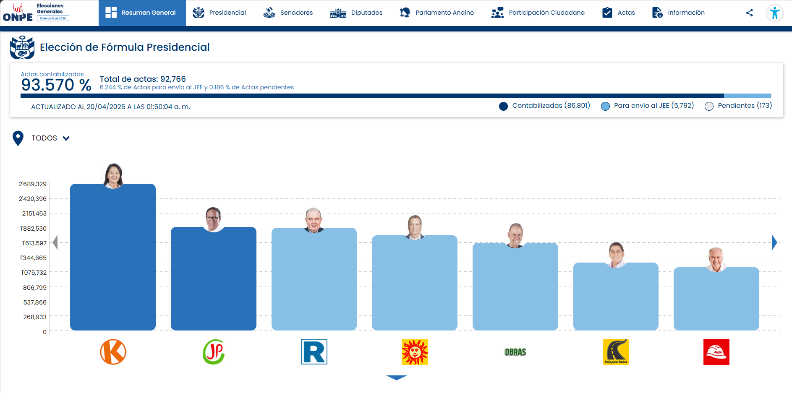

Tras la primera vuelta de las Elecciones Generales 2026 realizada el 12 de abril, los resultados oficiales de la ONPE (al 93.57% de actas contabilizadas) sitúan a los siguientes candidatos en los tres primeros lugares:
| PUESTO | CANDIDATO | PARTIDO POLÍTICO | PORCENTAJE DE VOTOS |
| 1 | KEIKO FUJIMORI | FUERZA POPULAR | 17.05% |
| 2 | ROBERTO SÁNCHEZ | JUNTOS POR EL PERÚ | 12.00% |
| 3 | RAFAEL LÓPEZ ALIAGA | RENOVACIÓN POPULAR | 11.92% |